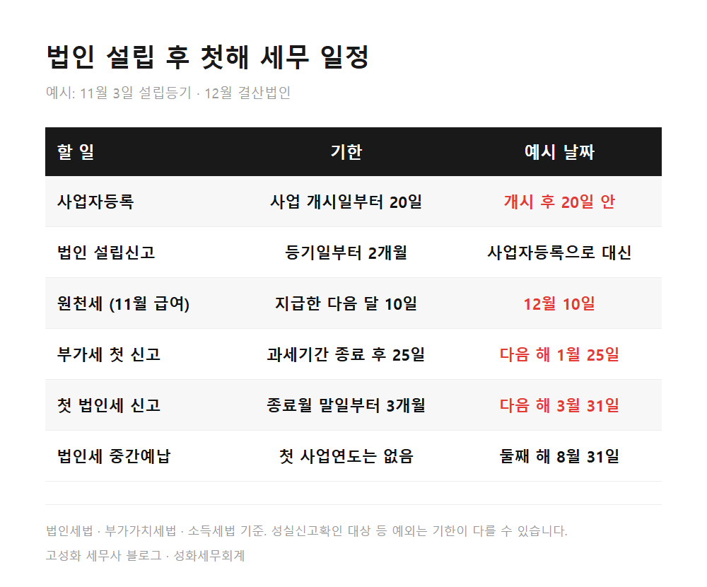
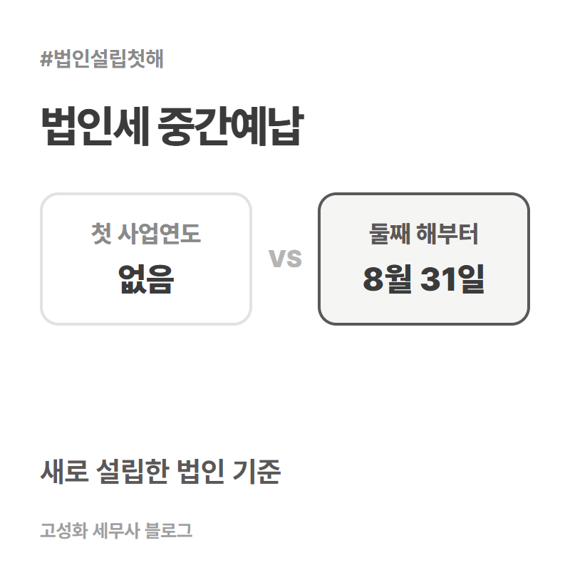
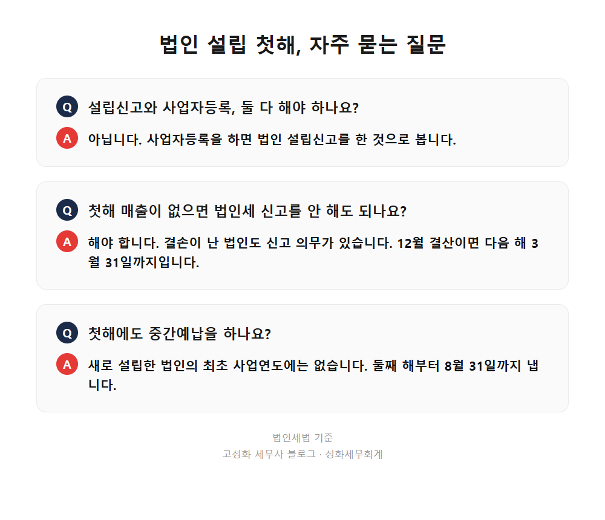

방배동 법인 설립 후 세무 일정, 등기일 기준 날짜표

등기부등본이 나오고 법인 통장까지 만들고 나면 한숨 돌리게 됩니다. 그런데 세무 일정은 바로 그날부터 시작됩니다.
방배동 사무실에서 설립 직후 상담을 하다 보면, 첫 질문은 거의 같습니다. "이제 뭘 언제까지 하면 되나요?"
법인 설립 직후 세무 일정은 설립등기일 하나만 알면 거의 다 계산됩니다. 사업자등록은 사업 개시일부터 20일 안에, 직원 급여를 주면 다음 달 10일에 원천세, 부가세는 첫 신고기간이 끝난 뒤 25일 안에, 법인세는 첫 사업연도가 끝나는 달 말일부터 3개월 안에 신고합니다.
아래에 순서대로 날짜를 붙여두었습니다.
- 설립등기일부터 순서대로 보는 첫해 세무 일정
- 11월 3일 등기 법인으로 날짜를 확인해보겠습니다
- 설립 직후 놓치기 쉬운 세 가지
한눈에 보기



자주 묻는 질문
법인 설립신고와 사업자등록을 둘 다 해야 하나요?
아닙니다. 사업자등록을 하면 법인 설립신고를 한 것으로 봅니다. 사업자등록 신청 때 주주 명세서 등 필요한 서류를 함께 내면 됩니다.
첫해에 매출이 없으면 법인세 신고를 안 해도 되나요?
해야 합니다. 소득이 없거나 결손이 난 법인도 신고 의무가 있습니다. 12월 결산법인이면 다음 해 3월 31일까지입니다.
첫해에도 법인세 중간예납을 하나요?
새로 설립한 법인의 최초 사업연도에는 중간예납이 없습니다. 둘째 사업연도부터 8월 31일까지 냅니다.
정리하면
법인 설립 후 세무 일정은 설립등기일과 사업연도만 정해지면 대부분 날짜가 나옵니다. 사업자등록 20일, 원천세 다음 달 10일, 부가세 신고기간 종료 후 25일, 법인세 3월 31일, 그리고 중간예납은 둘째 해부터입니다.
어려운 건 날짜가 아니라, 등기 전 비용과 주주 명세처럼 처음에 정리해두지 않으면 나중에 손대기 번거로운 부분입니다. 방배동이나 서초 인근에서 법인을 막 세우셨다면, 등기부등본과 정관만 들고 편하게 문의 주세요. 첫해 일정표부터 같이 만들어 드리겠습니다.
본문 전체와 근거 조문은 블로그에서 확인하실 수 있습니다.